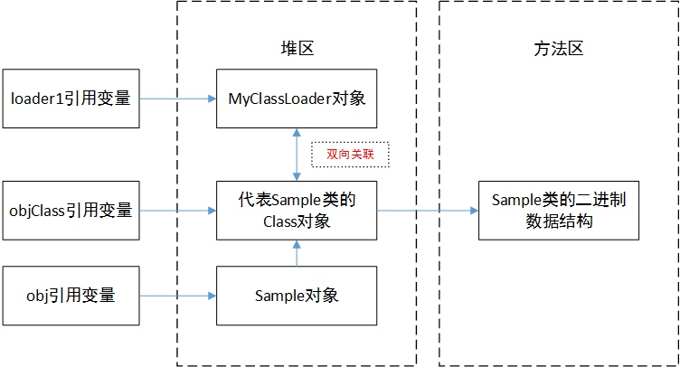
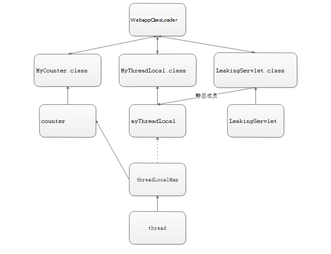
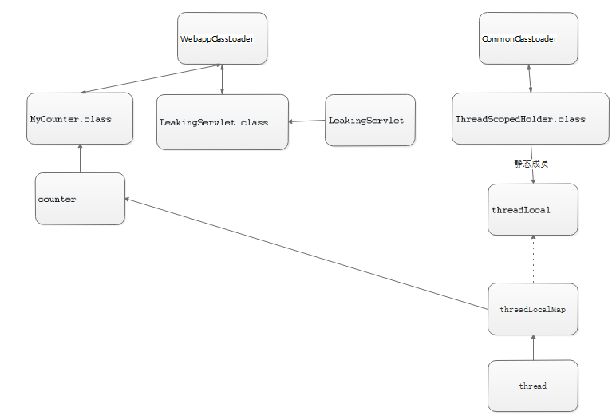

前言
之前写了一篇深入分析 ThreadLocal 内存泄漏问题是从理论上分析ThreadLocal的内存泄漏问题，这一篇文章我们来分析一下实际的内存泄漏案例。分析问题的过程比结果更重要，理论结合实际才能彻底分析出内存泄漏的原因。
案例与分析
问题背景
在 Tomcat 中，下面的代码都在 webapp 内，会导致WebappClassLoader泄漏，无法被回收。
public class MyCounter {
private int count = 0;
public void increment() {
count++;
}
public int getCount() {
return count;
}
}
public class MyThreadLocal extends ThreadLocal<MyCounter> {
}
public class LeakingServlet extends HttpServlet {
private static MyThreadLocal myThreadLocal = new MyThreadLocal();
protected void doGet(HttpServletRequest request,
HttpServletResponse response) throws ServletException, IOException {
MyCounter counter = myThreadLocal.get();
if (counter == null) {
counter = new MyCounter();
myThreadLocal.set(counter);
}
response.getWriter().println(
"The current thread served this servlet " + counter.getCount()
+ " times");
counter.increment();
}
}
上面的代码中，只要LeakingServlet被调用过一次，且执行它的线程没有停止，就会导致WebappClassLoader泄漏。每次你 reload 一下应用，就会多一份WebappClassLoader实例，最后导致 PermGen OutOfMemoryException。
解决问题
现在我们来思考一下：为什么上面的ThreadLocal子类会导致内存泄漏？
WebappClassLoader
首先，我们要搞清楚WebappClassLoader是什么鬼？
对于运行在 Java EE容器中的 Web 应用来说，类加载器的实现方式与一般的 Java 应用有所不同。不同的 Web 容器的实现方式也会有所不同。以 Apache Tomcat 来说，每个 Web 应用都有一个对应的类加载器实例。该类加载器也使用代理模式，所不同的是它是首先尝试去加载某个类，如果找不到再代理给父类加载器。这与一般类加载器的顺序是相反的。这是 Java Servlet 规范中的推荐做法，其目的是使得 Web 应用自己的类的优先级高于 Web 容器提供的类。这种代理模式的一个例外是：Java 核心库的类是不在查找范围之内的。这也是为了保证 Java 核心库的类型安全。
也就是说WebappClassLoader是 Tomcat 加载 webapp 的自定义类加载器，每个 webapp 的类加载器都是不一样的，这是为了隔离不同应用加载的类。
那么WebappClassLoader的特性跟内存泄漏有什么关系呢？目前还看不出来，但是它的一个很重要的特点值得我们注意：每个 webapp 都会自己的WebappClassLoader，这跟 Java 核心的类加载器不一样。
我们知道：导致WebappClassLoader泄漏必然是因为它被别的对象强引用了，那么我们可以尝试画出它们的引用关系图。等等！类加载器的作用到底是啥？为什么会被强引用？
类的生命周期与类加载器
要解决上面的问题，我们得去研究一下类的生命周期和类加载器的关系。这个问题说起来又是一篇文章，参考我做的笔记类的生命周期。
跟我们这个案例相关的主要是类的卸载：
在类使用完之后，如果满足下面的情况，类就会被卸载：
- 该类所有的实例都已经被回收，也就是 Java 堆中不存在该类的任何实例。
- 加载该类的
ClassLoader已经被回收。 - 该类对应的
java.lang.Class对象没有任何地方被引用，没有在任何地方通过反射访问该类的方法。
如果以上三个条件全部满足，JVM 就会在方法区垃圾回收的时候对类进行卸载，类的卸载过程其实就是在方法区中清空类信息，Java 类的整个生命周期就结束了。
由Java虚拟机自带的类加载器所加载的类，在虚拟机的生命周期中，始终不会被卸载。Java虚拟机自带的类加载器包括根类加载器、扩展类加载器和系统类加载器。Java虚拟机本身会始终引用这些类加载器，而这些类加载器则会始终引用它们所加载的类的Class对象，因此这些Class对象始终是可触及的。
由用户自定义的类加载器加载的类是可以被卸载的。
注意上面这句话，WebappClassLoader如果泄漏了，意味着它加载的类都无法被卸载，这就解释了为什么上面的代码会导致 PermGen OutOfMemoryException。
关键点看下面这幅图

我们可以发现：类加载器对象跟它加载的 Class 对象是双向关联的。这意味着，Class 对象可能就是强引用WebappClassLoader，导致它泄漏的元凶。
引用关系图
理解类加载器与类的生命周期的关系之后，我们可以开始画引用关系图了。（图中的LeakingServlet.class与myThreadLocal引用画的不严谨，主要是想表达myThreadLocal是类变量的意思）

下面，我们根据上面的图来分析WebappClassLoader泄漏的原因。
LeakingServlet持有static的MyThreadLocal，导致myThreadLocal的生命周期跟LeakingServlet类的生命周期一样长。意味着myThreadLocal不会被回收，弱引用形同虚设，所以当前线程无法通过ThreadLocalMap的防护措施清除counter的强引用（见深入分析 ThreadLocal 内存泄漏问题）。- 强引用链：
thread -> threadLocalMap -> counter -> MyCounter.class -> WebappClassLocader，导致WebappClassLoader泄漏。
总结
内存泄漏是很难发现的问题，往往由于多方面原因造成。ThreadLocal由于它与线程绑定的生命周期成为了内存泄漏的常客，稍有不慎就酿成大祸。
本文只是对一个特定案例的分析，若能以此举一反三，那便是极好的。最后我留另一个类似的案例供读者分析。
本文的案例来自于 Tomcat 的 Wiki MemoryLeakProtection
课后题
假设我们有一个定义在 Tomcat Common Classpath 下的类（例如说在 tomcat/lib 目录下）
public class ThreadScopedHolder {
private final static ThreadLocal<Object> threadLocal = new ThreadLocal<Object>();
public static void saveInHolder(Object o) {
threadLocal.set(o);
}
public static Object getFromHolder() {
return threadLocal.get();
}
}
两个在 webapp 的类：
public class MyCounter {
private int count = 0;
public void increment() {
count++;
}
public int getCount() {
return count;
}
}
public class LeakingServlet extends HttpServlet {
protected void doGet(HttpServletRequest request,
HttpServletResponse response) throws ServletException, IOException {
MyCounter counter = (MyCounter)ThreadScopedHolder.getFromHolder();
if (counter == null) {
counter = new MyCounter();
ThreadScopedHolder.saveInHolder(counter);
}
response.getWriter().println(
"The current thread served this servlet " + counter.getCount()
+ " times");
counter.increment();
}
}
提示

欢迎大家批评指正，留言交流。
参考文章
ClassLoader内存溢出-从tomcat的reload说起
类加载器内存泄露与tomcat自定义加载器
类的生命周期
深入分析 ThreadLocal 内存泄漏问题
Tomcat源码解读系列（四）——Tomcat类加载机制概述
MemoryLeakProtection